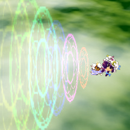
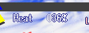
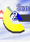
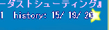
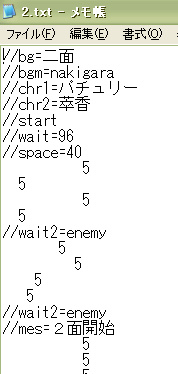
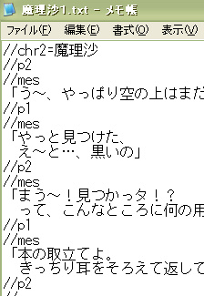

普通のシューティングゲームです。
壱符と弐符、そしてスペルカードを駆使して敵を倒し
ステージの最後にいるボスを倒せば、クリアです。
全７ステージ＋αで、ステージを選んで出発しましょう。
２．ダッシュ
|
|---|
ダッシュは、このゲームの鍵を握る重要な操作なので、憶えましょう。
ダッシュをすると、自機の移動速度が大幅に上昇します。
そして、敵の弾の殆どをすり抜けることができます。
ダッシュ中は魔方陣が出ますので、目安にして下さい。

以下にダッシュ中の動作を挙げると
・移動が高速になり、方向変化はカーブを描く
・敵弾をすり抜けられる（一部すり抜けられないのもある）
・攻撃がダッシュ攻撃に変化する
・ヒート値が上昇する
・グレイズが出来るようになる
すり抜けられない弾は、ステージ道中では、鳥型の霊の形をしています。
これは破壊することが出来るので、攻撃で破壊しましょう。
ヒート値はダッシュの他、様々な要素で上昇します。
ヒート値が上がると、自機がダメージを受けた時、ヒート値の％だけ加算されたダメージを受けます。
つまり、ヒートが２００％だと、通常の３倍のダメージを受けます。

３．スペルカードとグレイズ
|
|---|
符力ゲージを一ゲージ以上溜めると、スペルカードが発動可能になります。
スペルカードを使うと、一定時間無敵になり、強力な攻撃を行うことができます。
効果は選んだ武器に依存します。
符力ゲージ
符力ゲージは、敵弾をグレイズすることで溜めることができます。
グレイズは、ダッシュ中に敵の弾に近づくと発生します。
効果音とエフェクトがかかるので、グレイズの目安に。
ダメージを受けた直後にスペルカードを発動すると、喰らいボムとなります。
ライフゲージの赤い部分のダメージが無かったことになります。
４．アイテム
|
|---|
アイテムは、クリアを少しだけ楽にしてくれるものです。
主に以下のものが用意してありますが、実際に出現するかどうかは分かりませんｗ
アイテムは、ダッシュをすると回収することができます。
ただし、回収中にダッシュを切ると再び落ちていきます。
| パワーアイテム。符力ゲージが少し溜まります。 |
| 点アイテム。体力が少し回復します。画面右で取ると、点が高いです。 |
| スコアアイテム。得点です。 |
| ボムアイテム。符力ゲージが１ゲージ溜まります。 |
 | フルパワーアイテム。符力ゲージがＭＡＸまで溜まります。 |
| マックスアイテム。ライフが完全に回復します。 |
| ５．ボス
|
|---|
ボスはスペルカードと呼ばれる弾幕を使ってきます。
画面右上にボスの体力が表示されるので、体力を無くしたら勝ちです。
ただし、スペルカードは基本的に何枚も持っていますので、油断しないように。
ボスライフゲージ
ボスの撃つ弾はすり抜け不可や破壊可能などもありますが、外見上は分かりません。
慣れましょう。
ポーズをかけることで、実弾に○がつきます。目安にしましょう。
スペルカードは、戦歴が記録されます。

一番左が真取得回数。
真ん中が取得回数。
右が挑戦回数です。
真取得は、こちらがスペルカードを発動させずに勝利することでカウントされます。
又、スペルカード別にＭａｔｃｈモードで戦うことができます。
６．ステージと会話
|
|---|
ステージ構成はテキストで書くことができます。
「//start」の下から１行１３文字で敵構成を書きます。すると文字に応じた敵が出ます。
位置はちょうど左に９０度回転させた位置です。（上下出現を除く）

ステージ例
ボスを出すときは「//boss=名前#数値」と書くと出ます。
会話を出すときは「//chat=ファイル名」と書くとchatフォルダ内の指定ファイルのものが出ます。
ステージの最後は「//end」と書いてください。
「//start」より前は初期設定として扱われます。
・「//chr=キャラ名」：最初にロードする顔絵を決めます。
○その他の拡張機能
・「//bg=背景名」：背景を変更します。
・「//bgm=ファイル名,曲名」：ＢＧＭを変える事が出来ます。ボス戦前などに使用するといいです。
・「//bgms=ファイル名」：ＢＧＭがループしません。
・「//wait=数値」：次の敵が出るまで、数値のフレーム数だけ待ちます。
・「//wait2=文字」：次の敵が出るまで、指定動作だけ待ちます。（enemy:敵が全て消えるまで。event:イベント終了まで）
・「//space=３桁までの数値」：次の敵が出るまでのスペースを変更します。初期値３０。
・「//patern=パターン名」：テキストでは少し難しい特殊な敵パターンを出します。同時に２パターンは出ません。
・「//event=イベントＮｏ」：イベントを発生させます。
・「//slow=時間、ウェイト量」：画面の動作を遅くします。指定時間（フレーム）だけ、指定のウェイト量（ミリ秒）で動作します。
会話もテキストです。
基本的に、書いたそのままが出ます。

会話例
パチュリー側に喋らせる時は「//p1」、敵側は「//p2」と書いてください。
そして、「//mes」と書いた次の行から、次のコマンドが出るまでがメッセージです。
会話の最後は「//end」と書いてください。
○その他の拡張機能
・「//p0」：両方のキャラ絵を下げます。
・「//face1=番号」：パチュリー側のキャラ絵を変えます。読み込んである画像のうち、左上から順に０～５までです。
・「//face2=番号」：face1の敵側バージョン。
・「//chr1=キャラ名」：パチュリー側の読み込んである画像を変えます。「キャラ名.png」を読み込みます。
・「//chr2=キャラ名」：chr1の敵側バージョン
・「//event=イベントＮｏ」：イベントを発生させます。
７．小ネタ・小技など
|
|---|
◇武器選択ショートカット
タイトル画面でロックオンボタンを押すと、使用武器を変更することが出来ます。
◇ハイスコアリプレイ
リザルト画面でハイスコアを選び、決定ボタンを押すと、
そのスコアを取った時のりプレイを見ることが出来ます。
◇ヒート値
ヒート値の最大値は４００％です。
ダッシュなどは３００％以上ではヒート値が上昇しません。
◇難易度
裏の難易度として４段階があります。
ステージが２上がるごとに１上がっており、
同じ敵でも少しだけ後半ステージの方が強いです。
また、３分モードでは３０秒（ボス中は除く）経過するごとに１上がります。
◇リプレイ修正
リプレイ中にポーズすると、ポーズメニューが出ます。
その中に、「Play Game」というメニューがあります。
これを選択すると、リプレイ途中からプレイできます。
もちろん、そのプレイをリプレイに取ることもできます。
◇キャラドット絵変更
「Setting」の欄で、ロックオンボタンを押すとキャラドットが変化します。
またダッシュorスペルボタンでカラーを選べます。
性能は変化無しで、リプレイにも保存されません。
選べるものは、「weapon」フォルダの「chara.txt」に書いてあるものです。
画像が存在していないと、選べません。仮に選んでもパチュリーになります。
保存はされません。
◇武器取得条件
ネタバレなので、白文字で。全３４種。
５回プレイ：グリーンストーム
１０回：エメラルドメガリス
１５回：ベリーインレイク
２０回：サテライトヒマワリ
２５回：フォレストブレイズ
３０回：ラーヴァクロムレク
３５回：ジンジャガスト
４０回：ハイドロジェナスプロミネンス
４５回：プロギスティックレイン
５０回：マーキュリーポイズン
５５回：メタルファティーグ
６０回：ノエキアンデリュージュ
６５回：セントエルモピラー
７０回：シルバードラゴン
７５回：シルフィホルン上級
８０回：アグニシャイン
８５回：ウォーターエルフ
９０回：エレメンタルハーベスタ
９５回：アグニシャイン上級
１００回：ロイヤルフレア
２面クリア：ウィンターエレメント
３面：ドヨースピア
４面：レイジィトリリトン
５面：オータムエッジ
６面ｙ：レイジィトリリトン上級
６面ｆ：トリリトンシェイク
７面：サイレントセレナ
チュートリアルクリア：スプリングウィンド
３分モードクリア：アグニレイディアンス
the afterクリア：ロイヤルダイヤモンドリング
ハード以上でスペル『九曜』の十番目を取得：賢者の石
◇賢者の石効果
ネタバレなので、白文字で。
火の石：画面内の全ての敵・ボスにダメージを与える。
ただし、これで倒すことはできない。
水の石：徐々に回復する。
また、通常状態でヒートを大幅に減少させる。
木の石：行動が約１．３倍に高速化される。
ヒートの上がりや無敵の切れる時間も１．３倍なので注意。
金の石：符力が徐々に溜まっていく。
土の石：通常状態で実弾（ダッシュで抜けられない弾）をすりぬけられる。
＊通常状態とは静止・通常移動時を指します。
「ダッシュ・攻撃・被弾」状態では無効になります。
攻撃中も移動できるものは、当然「攻撃」状態です。
思いついたら増えるかもしれません。
| | | | | |